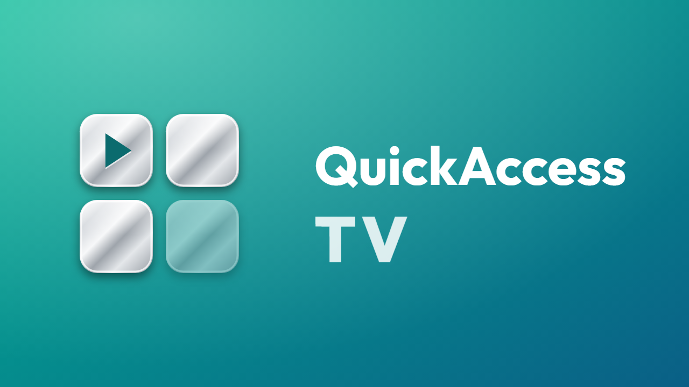
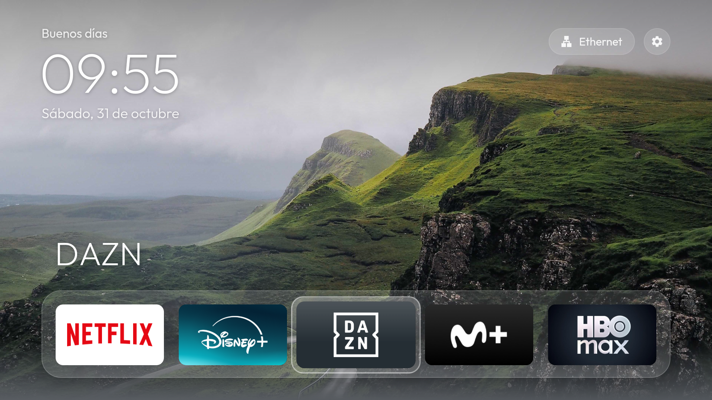
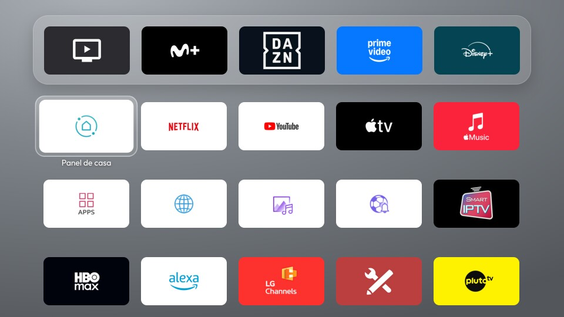
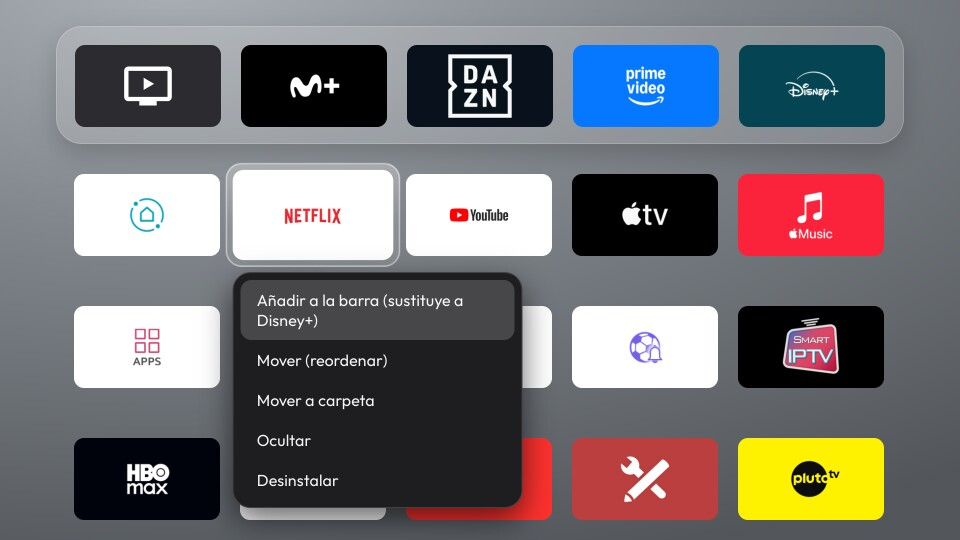
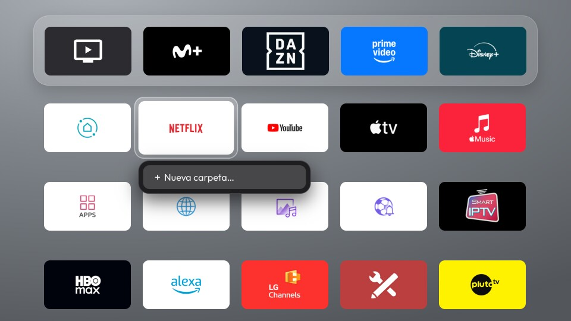
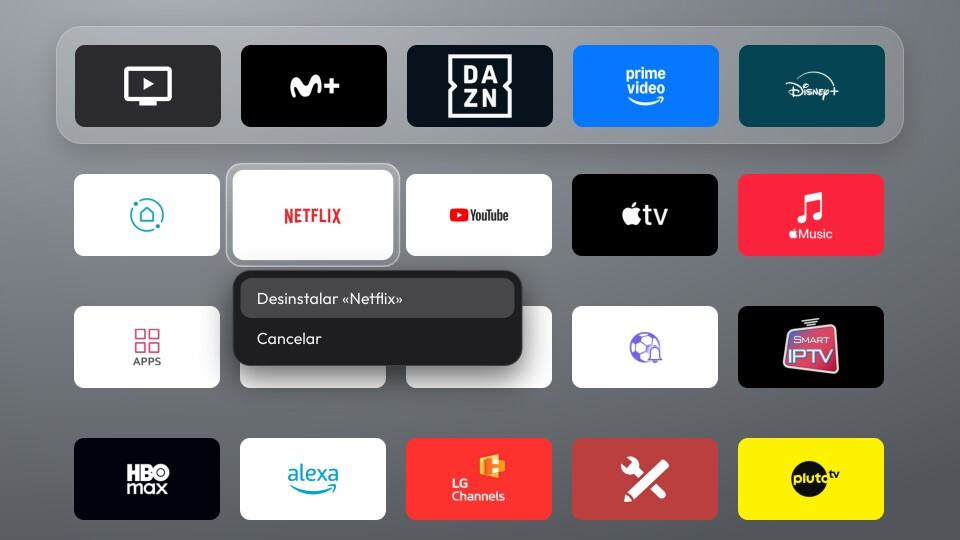

QuickAccess TV
Pantalla de inicio para la tele, al estilo Apple TV: un dock con tus apps favoritas, la rejilla con todas las demás, carpetas y fondos 4K. Una sola interfaz web que funciona en LG webOS, Android TV y Fire TV.
| LG webOS | Android TV | Fire TV |
|---|---|---|
 |
 |
 |
Qué hace
- Dock con tus apps favoritas y rejilla con todas las instaladas, con sus banners e iconos.
- Carpetas, reordenar apps y carpetas con el mando, renombrar con teclado en pantalla, ocultar apps.
- Fondos 4K que rotan con el dock en reposo y se difuminan al entrar en la rejilla.
- Reloj, estado de la red y acceso directo a los ajustes de la tele.
- Todo se maneja con las flechas y OK del mando; mantener OK abre el menú de cada app.
- HomeWatchdogService (opcional): en Fire TV y LG, donde el sistema no deja cambiar la pantalla de inicio sin root, vuelve a abrir QuickAccess TV al pulsar Inicio. Técnica original de este proyecto, explicada en docs/home-watchdog.md.
| Rejilla de apps | Menú de una app (mantener OK) |
|---|---|
 |
 |
| Crear una carpeta (Mover a carpeta → Nueva carpeta) | Desinstalar, con confirmación |
 |
 |
Capturas tomadas en LG webOS; la interfaz es la misma en Android TV y Fire TV.
Instalación
Todos los comandos se ejecutan en el PC, desde la carpeta raíz del repositorio, con bash (en Windows,
Git Bash). Sustituye <ip-de-la-tele> por la IP de tu tele. La guía de cada plataforma explica los
requisitos con más detalle.
LG webOS
Se instala como app del Modo Desarrollador de LG. Necesitas Node.js, y en la tele la app Developer Mode con Dev Mode Status y Key Server activados (cuenta gratuita de LG Developer). Guía completa: lg-webos/README.md.
cd lg-webos
npm install # herramientas ares de LG (solo la primera vez)
npx ares-setup-device # añade el dispositivo "lgtv": <ip-de-la-tele>, puerto 9922, usuario prisoner
npx ares-novacom --device lgtv --getkey # escribe la frase que muestra Developer Mode en la tele
./build-and-install.sh # empaqueta, instala y abre QuickAccess TV
WATCHDOG=1 ./build-and-install.sh # opcional: también HomeWatchdogService (la casita abre la app)
Desinstalar: ./uninstall.sh (desde lg-webos/).
Android TV
Se instala por ADB y queda como pantalla de inicio: el botón Inicio del mando la abre. Necesitas JDK 17 y Android SDK, y en la tele la depuración por red activada. Guía completa: android-tv/README.md.
adb connect <ip-de-la-tele>:5555 # acepta el aviso que aparece en la tele
TV=<ip-de-la-tele>:5555 ./android/build-and-install.sh # compila, instala, la fija como Home y la abre
Desinstalar: adb -s <ip-de-la-tele>:5555 uninstall com.quickaccesstv.app
Fire TV
Fire OS no deja cambiar la pantalla de inicio, así que se instala como app normal. Con HomeWatchdogService (opcional) vuelve sola al pulsar Inicio; mantener Inicio pulsado deja el Home de Amazon. Necesitas JDK 17 y Android SDK, y en el Fire TV la depuración ADB activada. Guía completa: fire-tv/README.md.
adb connect <ip-de-la-tele>:5555 # acepta el aviso que aparece en la tele
TV=<ip-de-la-tele>:5555 FLAVOR=firetv ./android/build-and-install.sh # solo la app
TV=<ip-de-la-tele>:5555 FLAVOR=firetv WATCHDOG=1 ./android/build-and-install.sh # opcional: con HomeWatchdogService
Después, en el Fire TV: Apps → Mis apps y juegos → QuickAccess TV → ☰ → Mover, para subirla a favoritos.
Desinstalar: adb -s <ip-de-la-tele>:5555 uninstall com.quickaccesstv.app.firetv
Estructura
web/ interfaz común (HTML/CSS/JS): dock, rejilla, carpetas, foco con el mando
android/ proyecto Android (WebView) con dos variantes: androidtv y firetv
lg-webos/ empaquetado webOS, herramientas del Modo Desarrollador y guía de la LG
android-tv/ guía de Android TV y limpieza opcional del sistema (debloat/)
fire-tv/ guía de Fire TV
docs/ HomeWatchdogService: la técnica sin root para Fire TV y LG, con lo descubierto de cada sistema
tools/ utilidades del repositorio (vista previa HTML de la documentación)
design/icon/ icono y banner en SVG, y el script que genera los PNG de cada plataforma
web/js/home.js no habla nunca con el sistema: usa window.PLATFORM, que rellena una capa por
plataforma (platform-webos.js con las APIs de LG, platform-android.js con el puente nativo del WebView).
Configuración
web/js/config.js reúne lo que se puede ajustar sin tocar código: columnas del dock, apps ocultas,
fondos y cada cuántos minutos rotan. Tras cambiarlo, vuelve a instalar en la tele.
Documentación en el navegador
Para revisar la documentación como páginas web navegables (cada .md genera su .html; el README de la
raíz, index.html):
npm install # solo la primera vez
npm run docs # vuelve a generar los .html tras cambiar algún .md
npm run docs:pdf # une toda la documentación en QuickAccessTV.pdf (necesita Edge o Chrome)
Icono
El icono y el banner salen de design/icon/icon.js. Para regenerar los PNG de todas las plataformas:
design/icon/render.sh # necesita Node.js y Edge o Chrome
Plataformas probadas
QuickAccess TV 3.0.0 se ha instalado y probado en:
| Plataforma | Sistema | Versión de Android / API | Aparato |
|---|---|---|---|
| LG webOS | webOS TV 7.6.0 (webOS 22) | — | Televisor LG con webOS 22 |
| Android TV | Android TV 14 | Android 14, API 34 | Decodificador Android TV |
| Fire TV | Fire OS 6.7.1.1 | Android 7.1.2, API 25 | Fire TV Stick 4K (1.ª generación) |
La app Android admite desde Android 6.0 (minSdk 23). En webOS usa las APIs SSAP y Luna del Modo
Desarrollador.
Herramientas de compilación
| Herramienta | Versión |
|---|---|
| JDK | 17 |
| Gradle | 8.9 |
| Android Gradle Plugin | 8.5.2 |
| Android SDK | compileSdk / targetSdk 34, minSdk 23 |
| AndroidX WebKit | 1.11.0 |
webOS TV CLI (@webos-tools/cli) |
3.2.6 |
| Node.js | 18 o superior |
Versión
La versión se define en web/js/version.js y debe coincidir con lg-webos/appinfo.json y con
versionName de android/app/build.gradle. En la tele se ve en Ajustes ⚙ → Novedades.
Créditos
Fondos 4K de Unsplash, servidos por Lorem Picsum, bajo la licencia de Unsplash:
| Archivo | Autor | Original |
|---|---|---|
web/img/wallpapers/wp1.jpg |
Andrew Ridley | unsplash.com/photos/Kt5hRENuotI |
web/img/wallpapers/wp2.jpg |
Philippe Wuyts | unsplash.com/photos/_h7aBovKia4 |
web/img/wallpapers/wp3.jpg |
Andrew Coelho | unsplash.com/photos/VB-w_3dnyvI |
web/img/wallpapers/wp4.jpg |
Go Wild | unsplash.com/photos/V0yAek6BgGk |
- Tipografía Outfit, de Rodrigo Fuenzalida, bajo la SIL Open Font License 1.1.
- html2canvas 1.4.1, de Niklas von Hertzen, bajo licencia MIT (solo para las capturas de depuración en webOS).
Licencia
MIT.